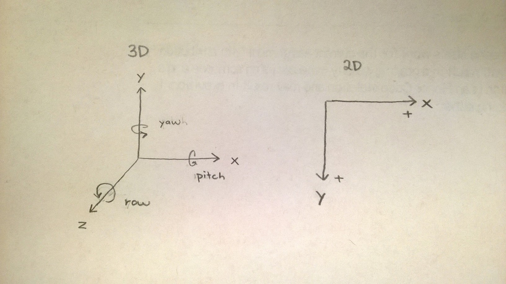
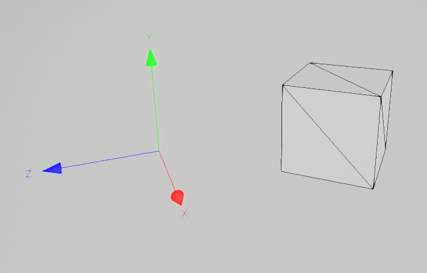
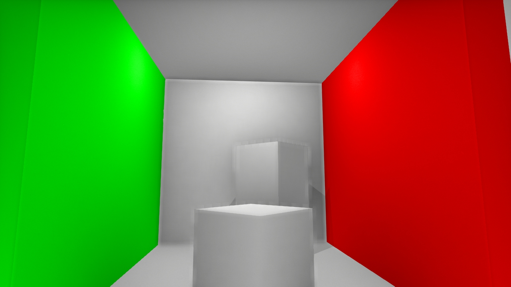

|
Kyle's Cubes
|
|
Kyle's Cubes
|
Project: 0-cubes
Team: kyle cheng
Data: september 5 2014
I really like watching systems grow and evolve. Whether it be modeling the development of a city over time or maybe creating a darwinian like animal simulator I hope to make an animation that graphically represents some simple self evolving organism or thing.
However after working on this project, I was able to appreciate the beautiful complexity that arises from simple mathematical functions applied in a gradient function to many simple objects. This approach was motivated by our class viewings of the first two short films. Another path I might want to take with computer graphic would be to explore creating models using equations or fractals.
Loading a Scene The first 3D Scene is loaded by App.cpp. Its onInit method has a loadScene method that loads an available scene. The loadScene method is a member GApp class. LoadScene calls the Scene:load method of the Scene.cpp class. The load method getes the proper pointer from the fileNameTable. The method then loads the relevant lights and models.
Moving the Camera App.cpp's onUserInput method handles user input. The input is then passed to GApp's onUserInput method which then passes that input to the WidgetManager. The WidgetManager then uses an Iterator to call all of its modules' onUserInput methods. One of these modules is the CameraControlWindow which manipulates the camera position with its m_trackManipulator pointer.
Animating Animation is done by manipulating the track variable of visible entities. We can set track to be a PFrameSpline or a transform. The PFrameSpline is manipulated by a control, which specifies the two points to move between and other variables such as time. A transform can be manipulated by an orbit relative to some CFrame.
Adding GUI Modify App.cpp's makeGUI method. The method has an example of how to add a basic gui to your program.
Knowing about all Scenes loadScene is called from App.cpp then GApp.cpp before we eventually call Scene.cpp's load method. Scene.cpp relies on a filenameTable method that returns an object with a method that returns pointers to scenes (indexed by that scene's string name).
Exceptions thrown from App.cpp's onInit method crash the program.
For the custom scene, I created a java file called CretAny.java that automatically creates .any objects. The java file faciliates the creation of .any objects in an object oriented manner. There is a G3DObject class that has several methods, setFileName, setCommand, setPosition that take in string input and generate the relevant .any commands. These G3DObject classes have methods akin to toString that is called by a main method that outputs the string output to a text file that is saved as a .any file.
|  |
| The 3D and 2D Coordinate System |
|  |
| The white cube |
|  |
| The Cornell Box |
| Main view with wireframe |
| Main view without wireframe |
| Another view |
| Another view |
| Another view |
▶ Play Video |
| Movie Sample |
Making the scene was relatively simple, I used the built in film maker in the G3D gui. Because all the camera shots were still shots without any movement, the hardest part of taking the film was choosing proper composition for the shots. I tried getting close up shots of the animated model and then tried to choose future shots that revealed larger parts of the model until the last shot gave a complete view of the entire model. I then used IMovie to stich the frames together and add in the music. The music source was from FreeSounds.org. I searched for electric music.
METHOD INVOCATION: App::main -> GApp::run -> GApp::onRun -> GApp::beginRun -> App::onInit -> GApp::loadScene -> App:onPose (same as above....) App:onInit -> GApp::loadScene -> GApp::onGraphics
The include environment variable functions similiarly. It helps icompile locate the G3D include files on our computer.
LOADING CUBE.OBJ: /usr/mac-cs-local/share/cs371/G3D/data/model/cube/cube.obj
The environment variables we set in our .bashrc_profile file gave us beginning file path information. More specifically, when we say fileName = "model/cube/cube.obj" the first part of the filePath is implicity filled with the path information of the system variable G3D10DATA.
Time on required elements: 10 hours
Time on optional elements: 12 hours
 1.8.7
1.8.7


{kind=link}
{kind=link}
{kind=link}
{kind=link}
{kind=link}
{kind=link}
{kind=link}
{kind=link}